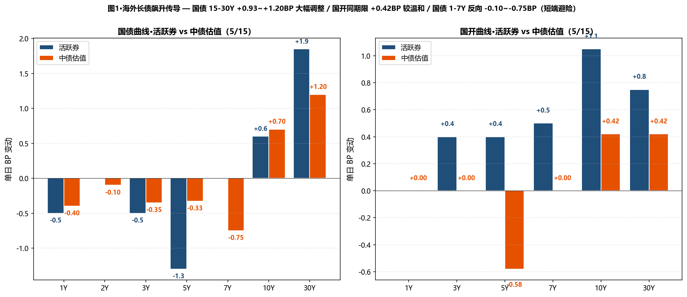
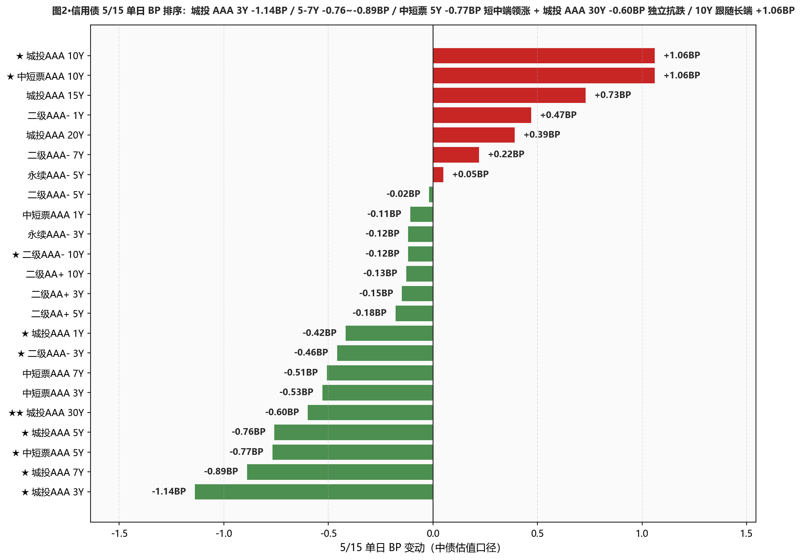
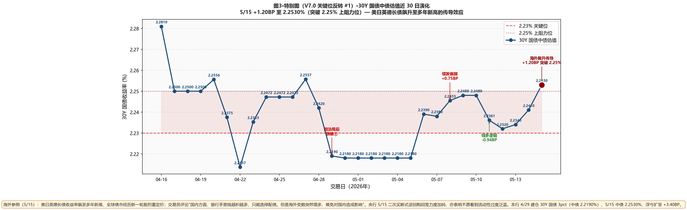

市场定性 海外长债飙升传导 + 国债长端加速调整 + 央行二次买断回笼 + 城投 AAA 30Y 独立抗跌—— 全球债券市场正经历新一轮剧烈重定价、美日英德长债收益率飙至多年新高—— 海外因素扰动增加； 国债长端加速调整：15Y +0.93 / 20Y +1.15 / 30Y +1.20BP（活跃券 30Y "26超长特别国债02" 尾盘 +1.60BP 报 2.2530% / 活跃券 +1.85BP 至 2.2555% **突破 2.25% 关键位**）； 但短中端反向修复 — 国债 1Y -0.40 / 2Y -0.10 / 3Y -0.35 / 5Y -0.33 / 7Y -0.75BP（避险买盘+曲线陡峭化）； 国开债更温和：30Y +0.42 / 10Y +0.42BP（明显好于国债 30Y +1.20BP 调整）—— 10Y 国开-国债隐含税率从 6.44BP 压至 6.16BP（-0.28BP、再创近 30 日新低）； 信用债内部分化：★★ 城投 AAA 30Y -0.60BP（信用债 5/15 独立抗跌、保险盘配置信号确认）/ 城投 AAA 3Y -1.14BP 短端领涨 / 5Y -0.76 / 7Y -0.89BP / 中短票 AAA 5Y -0.77BP / 二级 AAA- 3Y -0.46BP； ★ 信用债 10Y 跟随长端调整：中短票 AAA 10Y +1.06BP / 城投 AAA 10Y +1.06BP（但二级 AAA- 10Y -0.12BP 反向抗跌！）； 资金面继续宽松：DR001 -0.05BP 至 1.2646%（PDF "微幅下行 1.26% 附近"）/ DR007 +1.65BP 至 1.3186% / DR007-DR001 点差 5.40BP（小幅扩大但仍偏小）。
- ❌ 30Y 国债建仓浮亏扩至 +3.40BP — 海外冲击不可控、维持现仓本行 4/29 建仓 30Y 国债 3pct（中债 2.2190%）；5/14 浮亏 +2.20BP → 5/15 中债 2.2530% / 浮亏扩至 +3.40BP；活跃券 2.2555% 突破 2.25% 上阻力位；海外冲击是外部不可控因素、不止损（基本面未变）；考虑下周 5/19-5/22 海外因素企稳后、若 30Y 国债中债估值跌破 2.235% 可加仓 2pct 至总仓 5pct
- ✅ 城投 AAA 30Y 独立抗跌信号确认 — 保险盘配置盘验证5/15 城投 AAA 30Y -0.60BP 在国债 30Y +1.20BP 调整下反向下行；30Y-10Y 城投利差从 30.10 压至 28.44BP（-1.66BP、距 25BP 目标位仅 3.44BP）；保险/年金配置盘信号确认；可考虑下周新增城投 AAA 20-30Y 2-3pct 仓位（利差距 25BP 目标位已仅 3.44BP）
- ✅ 二级 AAA- 10Y -0.12BP 反向抗跌、5/12 加仓持仓未受冲击本行 5/12 加仓 7Y/10Y 2-3pct；5/14 反向 +0.72/+0.38BP / 5/15 二级 AAA- 10Y -0.12BP 反向抗跌；持仓不动；7Y +0.22BP 微调跟随、但板块整体稳定
- ⚠️ 国开 5-7Y 配置窗口重新打开 — 隐含税率创新低 6.16BP5/15 国开 5Y -0.58BP 反向修复、10Y +0.42BP 明显好于国债 10Y +0.70BP；10Y 隐含税率 6.44 → 6.16BP（-0.28BP、再创近 30 日新低）—— 但仍处低位、不主动加仓 5-7Y 国开、等隐含税率回到 8-10BP 再加
- ⚠️ 杠杆 105-108% 维持 — 监管态度趋严信号重申R-DR007 3.79BP / R-DR001 2.63BP；PDF 综述："本月买断式逆回购回笼力度再度加码、亦表明央行不愿看到流动性过度泛滥、预计未来资金利率将逐步回归政策利率中枢附近"；不上调杠杆至 110%、监管态度持续趋严信号重申、保守为先
- ① 30Y国债 vs 2.25% ⚠️ 双口径同时突破上阻力位：活跃券 2.2555%（上方 0.55BP）/ 中债估值 2.2530%（上方 0.30BP）→关注下周 5/19 是否回踩 2.235%；若回踩可加仓 2pct
- ② 10Y国债 vs 1.75% ⚠️ 中债估值已上方 1.58BP：活跃券 1.7530%（上方 0.30BP）/ 中债估值 1.7658%（上方 1.58BP）→10Y 双口径同时升至 1.75% 上方、不主动加仓
- ③ R-DR007 利差 >15BP ○ 未触发：温和分层：当前 3.79BP→维持 105-108% 杠杆
- ④ 10Y中短票AAA-3Y 利差 ≤25BP ○ 未触发：当前 49.10BP（+1.59BP）、距阈值 24.10BP→10Y +1.06 vs 3Y -0.53BP、利差大幅走阔
- ⑤ 30Y-10Y 城投AAA 利差 ≤25BP ⚠️ 接近触发：当前 28.44BP（-1.66BP）、距阈值仅 3.44BP→城投 30Y -0.60 vs 10Y +1.06BP、利差大幅收窄；可加仓 20-30Y 2-3pct
A 段·详细数据
① 资金面 Wind EDB API + Wind 综述 PDF
资金面继续宽松——DR001 -0.05BP 至 1.2646%（PDF "微幅下行徘徊于 1.26% 附近"、距 OMO -13.54BP）/ DR007 +1.65BP 至 1.3186%（距 OMO -8.14BP）；DR007-DR001 点差 5.40BP（较 5/14 3.70BP 小幅扩大、但仍 < 5BP）；非银资金成本：R001 +0.12BP 至 1.2909% / R007 +0.87BP 至 1.3565%；R-DR007 3.79BP / R-DR001 2.63BP；NCD AAA 1Y +0.75BP 至 1.4425% / 3M +0.25BP 至 1.3525%。央行 5/15 开展 5 亿元 7 天逆回购 / 5 亿元到期 / 单日完全对冲到期量。交易员评论："隔夜资金供给充沛但价格坚挺、不排除引导意味浓厚、而本月买断式逆回购回笼力度再度加码、亦表明央行不愿看到流动性过度泛滥、预计未来资金利率将逐步回归政策利率中枢附近"。
| 指标 | 5/14 | 5/15 | BP |
|---|---|---|---|
| DR001 (%) | 1.2651 | 1.2646 | -0.05BP |
| DR007 (%) | 1.3021 | 1.3186 | +1.65BP |
| R001 (%) | 1.2897 | 1.2909 | +0.12BP |
| R007 (%) | 1.3478 | 1.3565 | +0.87BP |
| NCD AAA 1Y (%) | 1.4350 | 1.4425 | +0.75BP |
| NCD AAA 3M (%) | 1.3500 | 1.3525 | +0.25BP |
② 利率债 — 中债估值 中债估值 xlsx
呈现"国债长端加速调整 + 短端反向修复 + 国开较温和"分化：国债 10-30Y 长端加速调整 — 10Y +0.70 / 15Y +0.93 / 20Y +1.15 / 30Y +1.20BP（30Y 单日 +1.20BP 是 30Y 国债 4/22 以来最大单日上行）；国债 1-7Y 反向修复 — 1Y -0.40 / 2Y -0.10 / 3Y -0.35 / 5Y -0.33 / 7Y -0.75BP（避险买盘 + 曲线陡峭化）；国开债更温和 — 5Y -0.58BP 反向修复 / 7Y 持平 / 10Y +0.42 / 30Y +0.42BP（显著好于国债同期限）；10Y 隐含税率 6.44 → 6.16BP（-0.28BP、再创近 30 日新低）—— 印证海外冲击下国债长端首当其冲、政金债反而抗跌；30Y-10Y 国债期限利差 48.22 → 48.72BP（+0.50BP、曲线陡峭化）。
| 品种 | 5/14 (%) | 5/15 (%) | BP |
|---|---|---|---|
| 国债 1Y | 1.2106 | 1.2066 | -0.40BP |
| 国债 2Y | 1.2743 | 1.2733 | -0.10BP |
| 国债 3Y | 1.2952 | 1.2917 | -0.35BP |
| 国债 5Y | 1.4736 | 1.4703 | -0.33BP |
| 国债 7Y | 1.6304 | 1.6229 | -0.75BP |
| 国债 10Y | 1.7588 | 1.7658 | +0.70BP |
| 国债 15Y | 2.0764 | 2.0857 | +0.93BP |
| 国债 20Y | 2.2535 | 2.2650 | +1.15BP |
| 国债 30Y | 2.2410 | 2.2530 | +1.20BP |
| 国开 1Y | 1.3663 | 1.3663 | +0.00BP |
| 国开 3Y | 1.5069 | 1.5069 | +0.00BP |
| 国开 5Y | 1.6113 | 1.6055 | -0.58BP |
| 国开 7Y | 1.7634 | 1.7634 | +0.00BP |
| 国开 10Y | 1.8232 | 1.8274 | +0.42BP |
| 国开 30Y | 2.3720 | 2.3762 | +0.42BP |
③ 利率债 — 活跃券 DM 查债通 + Wind 综述
活跃券呈现"30Y 活跃券 +1.85BP 突破 2.25% + 短端 1Y/3Y/5Y 反向 -0.50~-1.30BP 修复"格局：30Y 国债 "26超长特别国债02" PDF +1.60BP 报 2.2530%（尾盘明显上行、DM 综合 +1.85BP 报 2.2555%、**双口径同时突破 2.25% 上阻力位**、距 2.25% 上方 0.55BP）/ 10Y 国债 "26附息国债05" +0.80BP 报 1.7550%（DM 综合 +0.60BP 报 1.7530%、距 1.75% 上方 0.30BP）/ 10Y 国开 "25国开20" +0.85BP 报 1.8340%（DM 综合 +1.05BP 报 1.8360%）；短端反向修复 — 国债 1Y -0.50 / 3Y -0.50 / 5Y -1.30BP / 7Y 持平（避险买盘）；国开 7Y +0.50 / 30Y +0.75BP / 5Y +0.40BP 调整。国债期货分化收盘 — 30Y 主连 -0.12% 报 112.590（尾盘跳水）/ 10Y +0.04% 报 108.815 / 5Y +0.06% 报 106.375 / 2Y +0.03% 报 102.608。本周（5/12-5/15）上证累计跌 1.07%、创业板涨 3.5%。
| 品种 | 5/15 收盘 (%) | BP |
|---|---|---|
| 国债 1Y | 1.1950 | -0.50BP |
| 国债 3Y | 1.3850 | -0.50BP |
| 国债 5Y | 1.4120 | -1.30BP |
| 国债 7Y | 1.6150 | +0.00BP |
| 国债 10Y (26附息国债05 PDF +0.80 报 1.7550) | 1.7530 | +0.60BP |
| 国债 30Y (26超长特别国债02 PDF +1.60 报 2.2530) | 2.2555 | +1.85BP |
| 国开 5Y | 1.5700 | +0.40BP |
| 国开 7Y | 1.7900 | +0.50BP |
| 国开 10Y (25国开20 PDF +0.85 报 1.8340) | 1.8360 | +1.05BP |
| 国开 30Y | 2.0925 | +0.75BP |
④ 信用债 — 中债估值 中债估值 xlsx
呈现"城投 AAA 30Y 独立抗跌 + 城投 3-7Y 大涨 + 10Y 跟随调整"格局： ★★ 城投 AAA 30Y -0.60BP（信用债 5/15 独立抗跌、5/14 +0.34 → 5/15 -0.60BP 反转、保险/年金配置盘信号确认）； ★ 城投 AAA 3Y -1.14BP（信用债短端最强）/ 5Y -0.76 / 7Y -0.89BP / 城投 AA+ 3Y -0.64 / 5Y -0.46BP； 中短票 AAA 短中端领涨 — 1Y -0.11 / 2Y -0.34 / 3Y -0.53 / 5Y -0.77 / 7Y -0.51BP； ★ 二级 AAA- 10Y -0.12BP 反向抗跌 / 3Y -0.46 / 5Y -0.02BP；二级 AA+ 3Y -0.15 / 5Y -0.18 / 10Y -0.13BP； ★ 信用债 10Y 跟随长端调整：中短票 AAA 10Y +1.06BP / 城投 AAA 10Y +1.06BP（跟随利率债 10Y +0.70BP）/ 城投 AAA 15Y +0.73 / 20Y +0.39BP / 二级 AAA- 1Y +0.47BP（短端反向上行）； 永续 AAA- 3Y -0.12 / 5Y +0.05BP 分化。 本日核心观察：城投 AAA 30Y 独立抗跌是 4/24 以来再次出现的保险配置盘信号 — 30Y-10Y 城投利差从 30.10 压至 28.44BP（距 25BP 目标位仅 3.44BP），翻转信号⑤"接近触发"。
| 品种 | 5/14 (%) | 5/15 (%) | BP |
|---|---|---|---|
| 中短票AAA 1Y | 1.4963 | 1.4952 | -0.11BP |
| 中短票AAA 3Y | 1.7013 | 1.6960 | -0.53BP |
| ★ 中短票AAA 5Y | 1.8625 | 1.8548 | -0.77BP |
| 中短票AAA 7Y | 2.0439 | 2.0388 | -0.51BP |
| ★ 中短票AAA 10Y | 2.1764 | 2.1870 | +1.06BP |
| 城投AAA 1Y | 1.5079 | 1.5037 | -0.42BP |
| ★ 城投AAA 3Y | 1.7146 | 1.7032 | -1.14BP |
| 城投AAA 5Y | 1.8514 | 1.8438 | -0.76BP |
| 城投AAA 7Y | 2.0450 | 2.0361 | -0.89BP |
| ★ 城投AAA 10Y | 2.2289 | 2.2395 | +1.06BP |
| 城投AAA 15Y | 2.3363 | 2.3436 | +0.73BP |
| 城投AAA 20Y | 2.4703 | 2.4742 | +0.39BP |
| ★★ 城投AAA 30Y | 2.5299 | 2.5239 | -0.60BP |
| 二级AAA- 1Y | 1.5121 | 1.5168 | +0.47BP |
| 二级AAA- 3Y | 1.7567 | 1.7521 | -0.46BP |
| 二级AAA- 5Y | 1.9466 | 1.9464 | -0.02BP |
| 二级AAA- 7Y | 2.1343 | 2.1365 | +0.22BP |
| ★ 二级AAA- 10Y | 2.2489 | 2.2477 | -0.12BP |
| 二级AA+ 3Y | 1.7651 | 1.7636 | -0.15BP |
| 二级AA+ 5Y | 1.9761 | 1.9743 | -0.18BP |
| 二级AA+ 10Y | 2.2613 | 2.2600 | -0.13BP |
| 永续AAA- 3Y | 1.7731 | 1.7719 | -0.12BP |
| 永续AAA- 5Y | 1.9661 | 1.9666 | +0.05BP |
B 段·今日关键事件
① 海外长债飙升传导 — 美日英德长债收益率飙至多年新高：5/15 全球债券市场正经历新一轮剧烈重定价、美日英德长债收益率飙至多年新高；交易员评"国内方面、银行手里钱越积越多、只能选择配债。但是海外变数突然增多、难免对国内造成影响、后续要多观察"；机构称"中美经贸关系有望维持相对稳定、后续要关注本次特朗普访华后双方经贸合作具体成果的落地情况"。
② 央行 5/15 二次买断式逆回购回笼力度加码 — 政策信号确认：央行 5/15 本月第二次买断式逆回购回笼力度再度加码、亦表明央行不愿看到流动性过度泛滥；交易员评"隔夜资金供给充沛但价格坚挺、不排除引导意味浓厚；预计未来资金利率将逐步回归政策利率中枢附近"；央行 5/15 公开市场开展 5 亿元 7 天逆回购、单日完全对冲到期量。
③ 30Y 国债活跃券突破 2.25% 上阻力位：30Y 国债 "26超长特别国债02" 收益率尾盘明显上行 +1.60BP 报 2.2530%（DM 综合 +1.85BP 报 2.2555%、**双口径同时突破 2.25% 上阻力位**）；10Y 国债 "26附息国债05" +0.80BP 报 1.7550%（活跃券与中债估值均回到 1.75% 上方）；10Y 国开 "25国开20" +0.85BP 报 1.8340%；国债期货分化收盘 — 30Y 主连 -0.12% / 10Y +0.04% / 5Y +0.06% / 2Y +0.03%。
④ 城投 AAA 30Y -0.60BP 独立抗跌 — 4/24 以来再现保险配置盘信号：5/15 城投 AAA 30Y 在国债 30Y +1.20BP 调整下反向 -0.60BP 下行；30Y-10Y 城投利差从 30.10 压至 28.44BP（-1.66BP、距 25BP 目标位仅 3.44BP）；这是 4/24-4/29 周保险配置盘信号空前确认后、首次再现的独立抗跌信号；信用债 10Y 反向跟随长端上行（中短票 AAA 10Y +1.06 / 城投 AAA 10Y +1.06BP）但 30Y 独立强劲。
⑤ A 股震荡 — 上证 -1.02% / 本周累跌 1.07%：上证 -1.02% 报 4135.39 / 深证成指 -1.17% / 创业板 -0.56% / 北证 50 -0.47% / 科创 50 -1.67% / 万得全 A -1.04%；A 股全天成交 3.37 万亿元（昨日 3.39 万亿）；半导体设备产业链表现活跃、中微公司/芯源微等多股创出历史新高 / 氟化工概念股走强 / AI 应用端拉升 / 人形机器人概念股掀涨停潮 / 有色金属领跌 / CPO 服务器算力硬件概念股大幅回调。本周（5/12-5/15）上证累计跌 1.07%、创业板涨 3.5%。
⑥ 卖方观点（5/15）— 华泰固收（城投转型新研判）：华泰固收称："一是在债务层面、平台面临化债外力修复有效、但内生偿债能力相对薄弱的处境。二是在业务运营层面、平台转型投入布局较长、但短期回报依然偏弱、盈利能力持续下滑。三是城投整合重塑加速、全国范围内头部与尾部平台分化愈发明显、平台亦面临头部资源集中、尾部主体风险出清的再平衡"；中国证券业协会发布《证券公司投资者服务与保护报告（2026）》。
C 段·重点可视化（V7.0 固定2张+动态1张）

图1·海外长债飙升传导 — 国债 15-30Y +0.93~+1.20BP 大幅调整 / 国开同期限 +0.42BP 较温和 / 国债 1-7Y 反向 -0.10~-0.75BP（短端避险）

图2·信用债 5/15 单日 BP 排序：城投 AAA 3Y -1.14BP / 5-7Y -0.76~-0.89BP / 中短票 5Y -0.77BP 短中端领涨 + 城投 AAA 30Y -0.60BP 独立抗跌 / 10Y 跟随长端 +1.06BP

图3·特别图（V7.0 关键位反转 #1）·30Y 国债中债估值近 30 日演化 — 5/15 +1.20BP 至 2.2530%（突破 2.25% 上阻力位）— 海外长债飙升传导